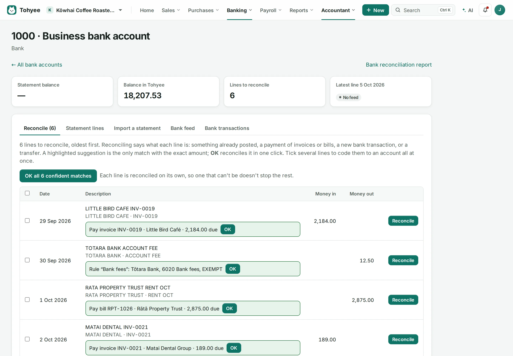
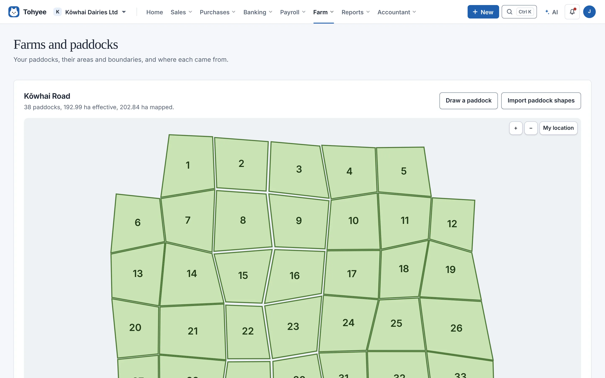

01 / ACCOUNTING
The books, beautifully connected.
Invoices, bills, bank reconciliation, GST and financial statements. Follow a figure back to the records behind it.

Your books, customers, people and farm.
One connected workspace. On a server you control.
Built in New Zealand · No subscription · No per-user fees
Match bank transactions
Review draft invoices
Prepare your GST return
You stay in control of approvals.An illustration of the connected workspace, not a live account or an exact app screen.
LESS SWITCHING. MORE DOING.
From the first quote to the year-end accounts, keep the work connected. Turn on the modules that fit your organisation.
Invoices, bills, bank reconciliation, GST and financial statements. Follow a figure back to the records behind it.

Contacts, opportunities and sales forecasts, with Shopify connections bringing shop activity into your workflow.
Payroll, leave, timesheets, expense claims, jobs and rosters, with access shaped around the work people do.
Explore the feature guide ↗Income-tax workings, forecasts and payment schedules. Import IRD account files for review alongside the books.
IRD file imports are supported. A live myIR connection and direct income-tax filing are not.FROM DATA TO DIRECTION
Bring spreadsheets and database sources into Analytics. Build charts, calculated measures and dashboards, then share the reports your team needs.
See supported connections ↗Fictional data · NZD · bars share a $50,000 scale
Sales: April $24,000; May $31,000; June $27,000; July $36,000; August $34,000; September $43,000.
BUILT FOR LIFE BEYOND THE OFFICE
Connect the paddocks, the livestock and the books. A farming workspace for the details that don't belong in a spreadsheet.

Paddock maps, pasture readings, soil tests, fertiliser plans and livestock records, alongside farm financial benchmarks. On a phone: Today, Map, Log, Safety and More.
App screenshots use demo data. Screen layouts may differ by version.
YOUR BUSINESS. YOUR BOOKS. YOUR SERVER.
Run Tohyee on a computer you control. Each organisation has its own accounting database, ready to back up or move independently.
Encrypted backups, a recovery kit, weekly backup checks and a restore wizard for a replacement computer. Keep a separate recovery copy and test it.
Read the code, follow the worked accounting examples and see the tests. AI suggestions and drafts still need the right approval.
MOVING FORWARD
This overview reflects version 0.16.0, 28 October 2026. Check the release notes for what's in each download.
Hazards, incidents, inductions, machinery checks and training, with records that can't be quietly changed and a weekly copy emailed off the farm.
Today, Map, Log and Safety, a farm walk that saves as you go, and a Farm staff role.
Sign in with Face ID or a fingerprint, and invite people from inside an organisation.
Use the latest release notes for packaged features. Open pull requests are proposals until merged.
Read release notes ↗START WITH A TEST ORGANISATION
Free, open-source software for the way you work.
Early development · AGPL v3 · Review reports and returns before relying on them.
Choose the Windows installer from the release assets. Hosting and connected services may have their own costs.
No. One Tohyee server can host multiple organisations. Each gets its own PostgreSQL database and its own memberships.
The app opens in a browser, including on phones. The server needs to be running and reachable. See the setup guide for remote access options.
The tax workspace supports imported IRD documents and account files. Do not assume a live myIR connection or direct income-tax filing; check the feature guide for the specific workflow you need.
Open a GitHub issue with what you were trying to do. Leave passwords, recovery codes and real financial data out of public reports.